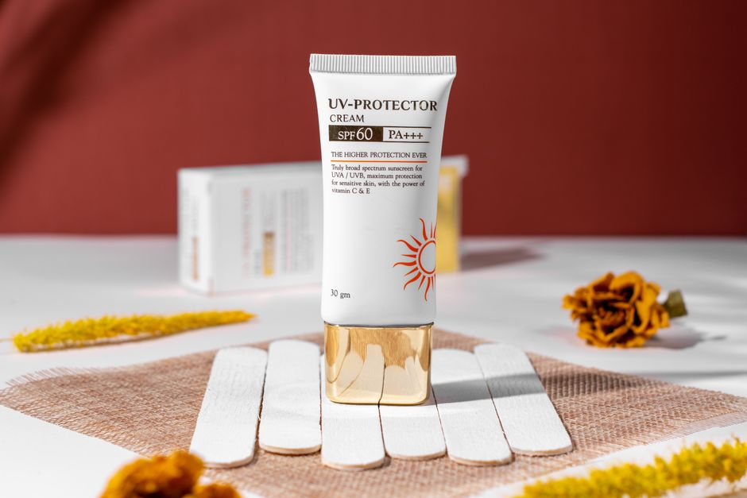
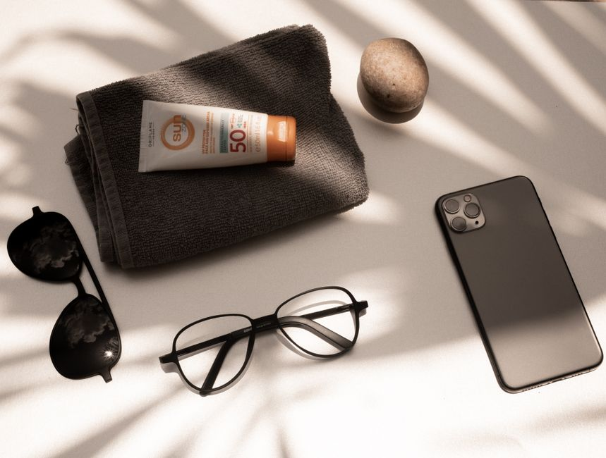
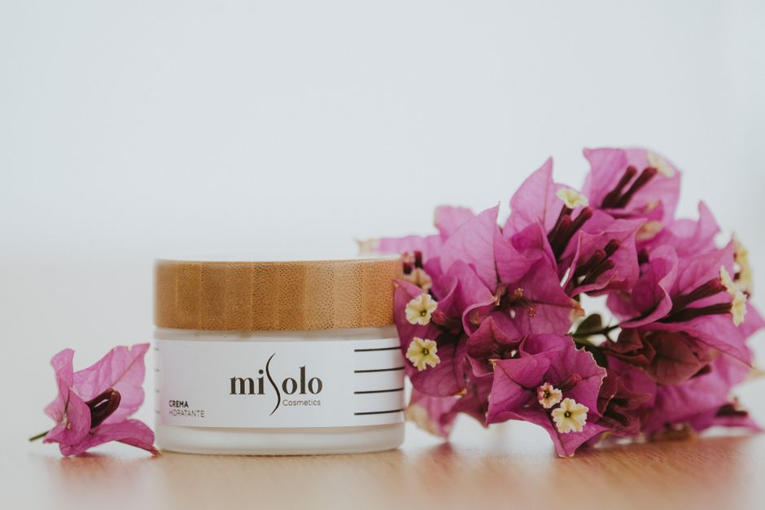

Protector solar corporal en barra (stick) spf 50+ para zonas específicas
Protector solar stick SPF 50+ para orejas, nariz y labios. Compacto, fácil de llevar y perfecto para retoques sin manchas.
0 vistas

Crema de manos con protección spf 50+ y extracto de aloe vera para uso diario
Crema de manos con SPF 50+ y aloe vera. Protege y cuida tus manos a diario. Ideal para uso outdoor y espacios con luz natural.
0 vistas

Sérum facial con protección spf 50+ y ácido hialurónico de uso diario
Sérum facial 2 en 1 con SPF 50+ e ácido hialurónico. Protección solar + hidratación profunda en un paso. Ideal para rutina diaria simplificada.
0 vistas
Crema corporal con protección spf 30 para uso diario
Crema corporal con SPF 30 que hidrata y protege tu piel en un solo paso. Protección solar de amplio espectro para uso diario. ¡Simplifica tu rutina!
0 vistas

Bálsamo labial con protección spf 30 y vitamina e para uso diario
Bálsamo labial con SPF 30 y vitamina E. Protege tus labios de los rayos UV mientras los mantiene hidratados. Cuidado completo para uso diario.
0 vistas

Crema hidratante facial con protección spf 30 de absorción rápida para uso diario
Crema hidratante facial con SPF 30 de absorción rápida. Protección solar + hidratación en un paso. Ideal para uso diario sin dejar residuos.
0 vistas

Protector solar facial spf 50+ de uso diario en spray
Protector solar facial SPF 50+ en spray para uso diario. Aplicación rápida y cómoda. Protección solar práctica y sin complicaciones. ¡Descubre nuestro producto!
0 vistas